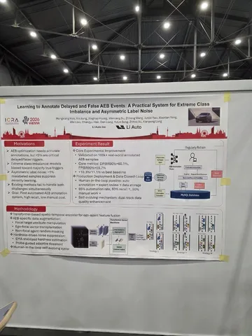
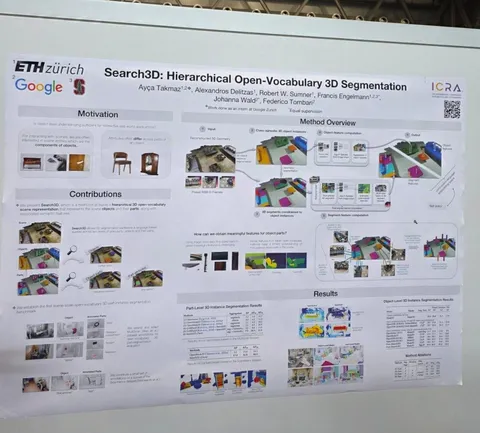
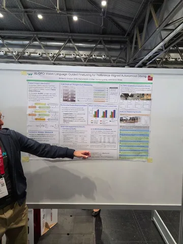
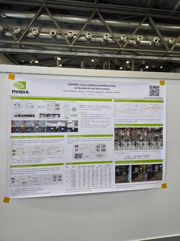
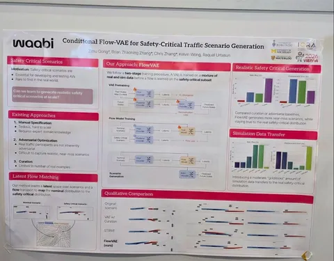

Продолжаем трансляцию с главной международной конференции о робототехнике и автоматизации. Сегодня в подборку самого интересного вошёл один доклад и пять постеров.
Residual Off-Policy RL for Finetuning Behavior Cloning Policies
Работа от Amazon Frontier AI & Robotics, посвящённая планированию движения. Проблематика рассматривается на роботах, но те же подходы можно применить к автономному транспорту.
Для больших VLA хорошо работает behaviour-cloning-претрейн, но RL пока масштабируется плохо: недостаточно данных, сложно учиться на success rate длинных горизонтов, а пространства экшнов слишком большие (в статье упоминаются 29 DOF), чтобы покрывать их в RL.
Авторы предлагают учить Residual RL — политику, которая даёт небольшую добавку к экшну от BC. А ещё делятся рецептом реализации:
Learning to Annotate Delayed and False AEB events: a Practical System for Extreme Class Imbalance and Asymmetric Label Noise
Постер о том, как работает AEB в Lixiang. Говорят, что в проде используют и rule-based, и модель. Чаще срабатывает rule-based, модель тюнят для более сложных сценариев. Данные собирают по экстренным торможениям всех пользователей Lixiang. Датасетами, конечно же, не делятся.
Search3D: Hierarchical Open-Vocabulary 3D Segmentation
Второй постер о новом подходе к open vocabulary от ETH, Google и Stanford. Застать авторов, к сожалению, не получилось.
VL-DPO: Vision-Language-Guided Finetuning for Preference-Aligned Autonomous Driving
Третий постер — от Waymo. Взяли VLM, собрали преференсы, обучили DPO. Но не для end2end-, а для motion-LM-модели. На метриках open-loop стало лучше, на closed-loop не проверяли.
COMPASS: Cross-embOdiment Mobility Policy via ResiduAI RL and Skill Synthesis
Ещё один Residual RL на четвёртом постере: на этот раз от NVIDIA. Авторы пишут что обучение только в симуляторе хорошо работает в реальности без sim2real.
Conditional Flow-VAE for Safety-Critical Traffic Scenario Generation
Пятый постер — работа Waabi AI о генерации сложных сценариев поведения. Учат генеративную модель на обычных данных, потом на малом числе кейсов тренируют для неё флоуматчинг, который переводит оригинальное распределение в более safety critical.
#YaICRA26
Подсмотрел для вас интересное
404 driver not found




